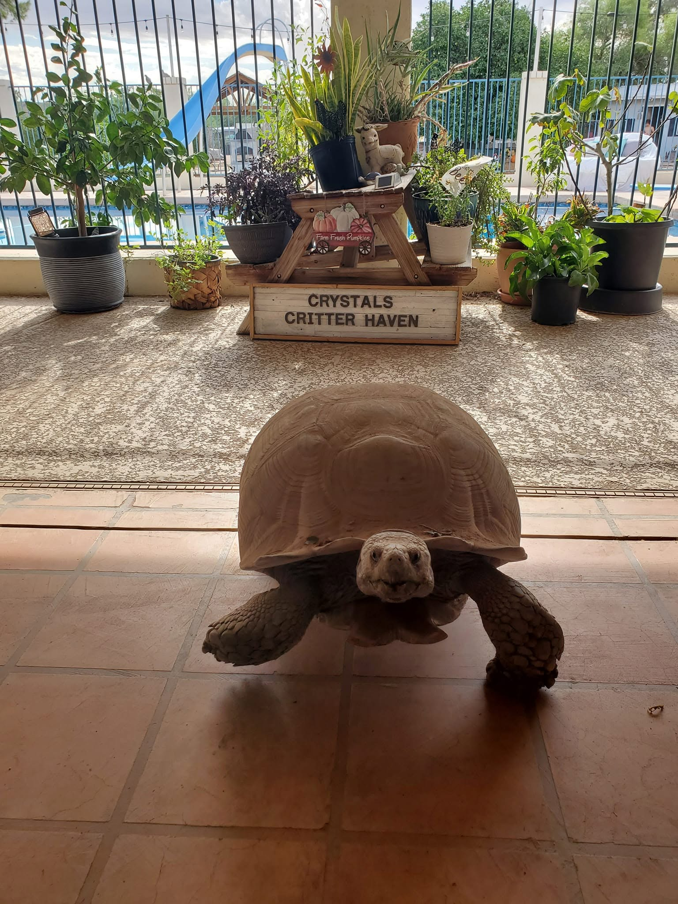
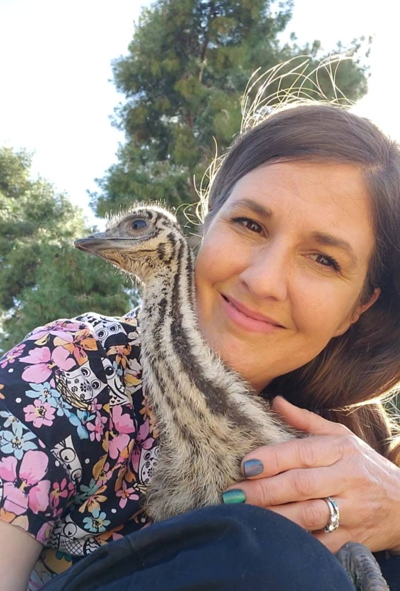

About Crystal's Critter Haven
Every kind of animal. Care shaped to each one.
The Haven cares for wild and domestic animals in need, with a special focus on medical cases and neonates: newborn animals that often require warmth, frequent feeding, and close observation.
Crystal's Critter Haven began in Mesa, Arizona, in 2018. Its earliest work included caring for warrant hold animals temporarily placed by law enforcement or the Department of Agriculture during legal or animal welfare cases. Crystal also helped local veterinary teams when surrendered animals needed continued medical attention or specialized care.
Today, the Haven is a volunteer-operated 501(c)(3) animal rescue, wildlife rehabilitation, and sanctuary organization. It also places eligible domestic animals in appropriate adoptive homes.
Every animal has a path forward.
Depending on the animal's needs, care may lead to rehabilitation and release, placement in an appropriate adoptive home, or lifelong sanctuary.


Meet Crystal
A lifetime devoted to animals.
Born and raised in Mesa, Arizona, Crystal grew up raising animals. There has rarely been a time in her life when she was not bottle-feeding something.
Crystal is a Certified Veterinary Technician and a wildlife rehabilitator licensed at both the state and federal levels. Her clinical knowledge and lifelong hands-on experience guide the individualized care each animal receives.
She dedicates more than 100 hours each week to the Haven, contributing her home, professional skills, time, and personal resources to animals in need. Her guiding belief is simple: every animal deserves the same compassion and standard of care, whether it is a rodent or a bald eagle.
“This is my heart, my soul, and my passion.”Crystal, Founder of Crystal's Critter Haven

Skilled care. A lifetime of devotion.